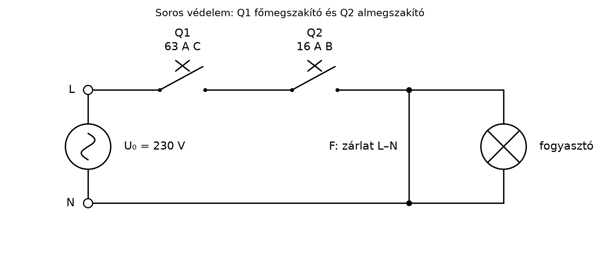

Egy társasház lakáselosztójában zárlat keletkezik egy konnektor mögött. A lakás kismegszakítója leold, ez rendben van. A lépcsőházban azonban elsötétül a folyosó, mert a főelosztóban lévő, nagyobb névleges áramú megszakító is leoldott. A hiba miatt az egész lépcsőház áramtalan lett. Az ilyen hibák tervezéssel, a védelmi eszközök szándékos koordinációjával elkerülhetők: ez a szelektivitás. A cél az, hogy a hiba helyéhez legközelebbi védelem oldjon ki, a mögötte álló tartalék védelmek pedig bekapcsolva maradjanak. Ipari elosztóhálózatokban, többszintes épületekben és gépi vezérléseknél ugyanez a kérdés: a fő és az alárendelt védelmek sorrendje és összehangolása határozza meg az üzem folytonosságát.
Képzeljünk el két, sorosan kapcsolt megszakítót. A fogyasztóhoz közel van a kisebb, 16 A-es B jellegű kismegszakító (Q2), előtte az elosztó főmegszakítója, 63 A-es C jellegű (Q1). A hiba a Q2 utáni szakaszon keletkezik. A zárlati áram mindkét megszakítón átfolyik. Ha mindkét megszakító azonnal elindul, a nagyobb sem feltétlenül jár le később: a kisebbnek kell megnyernie a versenyt.

A rajz a sort zárt áramkörként mutatja: a táplálás L kapcsától Q1, utána Q2, végül a fogyasztó, ahonnan az N vezető tér vissza. Az F hely a Q2 utáni szakaszon az L és az N közötti zárlat (a fogyasztóval párhuzamos függőleges összeköttetés a hibahely, F); a hibaáram mindkét védelmen átfolyik. A kérdés az, hogy melyik szakítja meg az áramkört, és hogyan biztosítjuk, hogy a lehető legnagyobb része az épületnek áram alatt maradjon.
Definíció. (Szelektivitás) Két, sorosan kapcsolt túláramvédelmi eszköz akkor szelektív, ha a hibaáram hatására – a hibához közelebbi (alárendelt) védelem old ki, míg a táplálás felőli (fő) védelem bekapcsolva marad. A teljes szelektivitás azt jelenti, hogy ezt a hibahely összes lehetséges zárlati áramára garantáljuk; részleges szelektivitás csak egy meghatározott áramértékig áll fenn.
Definíció. (Áramszelektivitás) Két, különböző névleges áramú kismegszakítónál a kisebb megszakító pillanatkioldó tartománya alacsonyabb áramoknál kezdődik, mint a nagyobbé. Ha a zárlati áram a kisebb pillanatkioldó tartományába esik, de a nagyobbéba még nem, a kisebb gyorsan (kb. 0,01 s alatt) lekapcsol, míg a nagyobb a termikus (lassú) tartományában van, így nem tud leoldani a rövid ideig tartó áramlökéstől. Ezt nevezzük áramszelektivitásnak, mert a szelektivitás elsősorban a különböző kioldási áram-tartományokon alapul.
Példa. Q2 = 16 A B jellegű: pillanatkioldó tartománya durván és , tehát (a pontos érték gyártói adat). Q1 = 63 A C jellegű: pillanatkioldó tartománya és , tehát . Ha a zárlati áram , akkor Q2 pillanatkioldója elindul, Q1 ellenben a termikus tartományban van, mert . A Q2 közvetlen leoldásával az áram megszűnik, így Q1 nem melegszik tovább, és bekapcsolva marad. Ez az áramszelektivitás működése.
Definíció. (Időszelektivitás) Ha a hibáram olyan nagy, hogy mindkét védelem pillanatkioldó tartományában van, az áram alapú megkülönböztetés nem elegendő. Ilyenkor a táplálás felőli megszakítón szándékos késleltetést állítanak be: a főmegszakító csak például s múlva old, az alárendelt viszont pillanatszerűen. Az alárendelt kikapcsol, az áram megszűnik, a főmegszakító időzítése visszaáll, és bekapcsolva marad. Ez a módszer ipari elosztókban, nagy zárlati áramú helyeken gyakori.
Definíció. (Hátvédelem, cascading) A hátvédelem azt jelenti, hogy egy nagyobb megszakítóképességű, a táplálás felőli megszakító korlátozza a zárlati áram csúcsát vagy az áramimpulzus idejét olyan mértékben, hogy az alárendelt, kisebb megszakítóképességű készülék képes a hibát megszakítani, pedig a névleges megszakítóképessége önmagában nem lenne elegendő. Ez csak a gyártó által bevizsgált és közzétett kombinációkra igaz; a hátvédelmi táblázatok tartalmazzák a megengedett párokat és a megnövelt megszakítóképesség értékét. A hátvédelem nem azonos a szelektivitással: hátvédelemnél megengedett, hogy a fővédelem is beavatkozzon, a cél a biztonságos megszakítás.
Szabály. Az elosztó védelmi sorrendje: a táplálás felől haladva egyre kisebb névleges áramú és – ha lehet – gyorsabb kioldású eszközök következnek. A főmegszakító a teljes elosztó zárlati védelmét adja; az alárendelt védelmek a csoportokét. A tervezés során először a várható zárlati áramot kell ismerni, utána ellenőrizni a megszakítóképességet, végül a szelektivitást vagy hátvédelmet.
Példa 1. (Áramszelektivitás ellenőrzése)
Adott: Q1 = 63 A C, pillanatkioldó tartománya
,
tehát
.
Q2 = 16 A B, tartománya
,
tehát
.
A várható zárlati áram a Q2 utáni hibahelyen
.
Keresett: szelektív-e a kapcsolás?
Megoldás: Q2 pillanatkioldója elindul, mert
.
Q1 pillanatkioldó tartománya
;
mivel
ebbe az intervallumba esik, Q1 is a gyors tartományában van. Így
áramszelektivitás nincs; a két készülék versenyez. A gyakorlatban a
kisebb kismegszakító mechanikája általában gyorsabban old, és az
áramkorlátozó képesség is segíti, de nem garantált a
teljes szelektivitás. Ilyenkor gyártói szelektivitási táblázatot kell
használni. Ha a táblázat szerint a kombináció nem szelektív
-ig,
akkor részleges szelektivitás áll fenn.
Példa 2. (Időszelektivitás számítása)
Adott: főmegszakító Q1 beállított késleltetése
s; almegszakító Q2 pillanatkioldó, tipikus kioldási idő
s. Hibánál az áram mindkettőn átfolyik.
Keresett: miért marad be Q1?
Megoldás: Q2 megszakítja az áramkört jóval hamarabb, mint Q1 időzítése
lejárna. A Q1 időzítője nem éri el a beállított késleltetést, mert az
áram nullára csökken. A feltétel:
.
Ha a késleltetés
s, az alárendelt pedig
s alatt old, a tartalék bőven elegendő. Az időszelektivitás tehát akkor
működik, ha az alárendelt védelem megszakítja az áramot, mielőtt a
fővédelem késleltetése lejár.
Példa 3. (Hátvédelem értelmezése gyártói
táblázattal)
Adott: Q1 főmegszakító 125 A, névleges megszakítóképessége
.
Q2 kismegszakító 32 A C, névleges megszakítóképessége
.
A beépítés helyén a várható zárlati áram
.
Keresett: beépíthető-e Q2 önmagában?
Megoldás: Q2 önmagában nem, mert
.
A gyártói hátvédelmi táblázat szerint azonban a Q1–Q2 kombinációra a Q2
megnövelt megszakítóképessége
(ez ellenőrizendő). Mivel
,
a kombináció megfelelő. A hátvédelem fizikailag azért működik, mert a Q1
áramkorlátozó hatása csökkenti a Q2 tényleges igénybevételét. A táblázat
mindig a gyártó mérési sorozatán alapul, ezért más gyártó készülékeire
nem vonatkozik.
Szabvány. A kisfeszültségű villamos berendezések túláramvédelmére vonatkozó követelményeket az MSZ HD 60364-4-43 tartalmazza: a védelmi eszközök megszakítóképessége nem lehet kisebb, mint a várható zárlati áram a beépítési helyen; hátvédelem esetén a két eszköz kombinációja is elfogadható, ha a gyártó ezt igazolja (jellemzően táblázatban). A megszakítókra az MSZ EN 60947-2, a kismegszakítókra az MSZ EN 60898-1 vonatkozik; a koordinációs jellemzők a termékszabványokban és a gyártói katalógusokban találhatók. A pontos értékeket, a hátvédelmi táblázatok határait és az aktuális kiadási számokat mindig ellenőrizni kell a gyártói adatlappal és a hatályos szabványkiadással.
Egy háromszintes irodaházban a főelosztóban 125 A-es kompakt megszakítót szereltek, a szinti elosztók bemenetén 63 A-es szelektív (késleltetett) főkismegszakítókat. A szinti elosztók mögött a végáramkörök 16 A-es B jellegű kismegszakítókkal védettek. Az egyik emeleten egy irodai konnektorban zárlat keletkezett: a 16 A-es megszakító pillanatszerűen leoldott. A zárlati áram kb. 500 A volt, ami egy közönséges 63 A-es C kismegszakítónál a pillanatkioldó sávba () esne, ezért ott a szelektivitás nem lett volna garantált. A szinti elosztó bemenetén azonban késleltetett, szelektív főkismegszakító volt, amelyre a gyártói táblázat a 16 A-es B ággal szemben a várható zárlati áramig szelektivitást adott (ellenőrizendő: gyártói szelektivitási táblázat), így a szinti elosztó bekapcsolva maradt. Az iroda csak egy konnektorról veszítette el az áramkört, a szint többi része működött tovább. A tanulság: a szelektivitást nem „ránézésre”, hanem gyártói táblázatból kell ellenőrizni.
A másik gyakori eset a FI-relék (áram-védőkapcsolók) koordinációja. A főelosztóban 100 mA-es, S típusú (szelektív, késleltetett) FI-relé védi a szintet, a lakáselosztóban 30 mA-es, normál típusú FI. Ha a végáramkörben földzárlat keletkezik, a 30 mA-es azonnal leold; a 100 mA-es S a késleltetése miatt bekapcsolva marad. Ez az áram- és időszelektivitás együttes alkalmazása.
Hiba 1. „A nagyobb névleges áramú megszakító úgyis később old, mint a kisebb.” Ez csak a termikus tartományban igaz. Nagy zárlati áramnál mindkét megszakító pillanatkioldója elindulhat, és a nagyobb mechanikája sem mindig lassabb. Ilyenkor a gyártói táblázat nélkül nincs garancia a szelektivitásra.
Hiba 2. A hátvédelmi táblázatot figyelmen kívül hagyva a szerelő egy kisebb megszakítóképességű kismegszakítót épít be olyan helyre, ahol a várható zárlati áram nagyobb. A kismegszakító névleges adata önmagában nem elég; ha nincs hátvédelmi kombináció, a készülék tönkremehet vagy nem tudja megszakítani a zárlatot.
Hiba 3. FI-relék soros kapcsolásánál a főFI normál, 30 mA-es típus, az alárendelt is 30 mA-es. Földzárlatnál mindkettő kioldhat, mert a differenciaáram mindkettőn átfolyik, és nincs időbeli késleltetés. A helyes megoldás: a főFI 100 mA S típus, az alárendeltek 30 mA gyors típusok.
Hiba 4. Az időszelektivitásnál a késleltetést túl kicsire állítják, például 0,02 s-ra, miközben az alárendelt megszakító 0,01 s-os, de a mechanikai szórás miatt a gyakorlatban 0,03-0,05 s is lehet. A fővédelem így leoldhat, és a szelektivitás elvész.
1. feladat (A)
Definiáld a szelektivitást és a hátvédelmet egy-egy mondatban, majd
mondd el, mi a lényegi különbség a céljukban.
2. feladat (A)
Egy elosztóban Q1 = 63 A C és Q2 = 20 A B kismegszakító van sorosan.
Számítsd ki a pillanatkioldó tartományokat a tipikus B (3–5
)
és C (5–10
)
jelleggörbék szerint.
3. feladat (B)
Az előző feladat kapcsolásában a várható zárlati áram a Q2 utáni
hibahelyen
.
Állapítsd meg, hogy melyik megszakító pillanatkioldó tartományába esik
ez az áram, és ennek alapján várható-e áramszelektivitás.
4. feladat (B)
Adott: Q1 főmegszakító 160 A, megszakítóképessége
;
Q2 kismegszakító 32 A C, megszakítóképessége
.
A beépítés helyén a várható zárlati áram
.
A gyártói hátvédelmi táblázat szerint a Q1–Q2 kombinációval a Q2
megnövelt megszakítóképessége
(ellenőrizendő érték). Beépíthető-e Q2 ezen a helyen Q1-gyel kombinálva?
Indokold számítással.
5. feladat (C)
Egy lakóépületben a főelosztóban 100 mA-es S típusú FI-relé, a
lakáselosztóban 30 mA-es normál FI-relé van. A konyhai aljzatkörben
földzárlat miatt 40 mA differenciaáram folyik. Elemezd, hogyan
viselkedik a két FI-relé, és milyen típusú szelektivitás érvényesül. Mi
a helyzet 150 mA-nél?
6. feladat (D)
Egy kapcsolószekrényben Q1 = 100 A-es kompakt megszakító, alatta Q2 = 25
A-es motorvédő kapcsoló. A motor kapcsainál bekövetkező zárlat (kb. 1,2
kA) Q1-et is leoldja, pedig csak Q2-nek kellene; a motor névleges árama
csak 18 A, indítási árama kb. 110–150 A, amely Q1-et nem oldja le. A Q1
pillanatkioldója 10
-nél
kb. 1,0 kA-nál kezd eloldani (ellenőrizendő). Milyen tipikus hibát
sejtesz? Javasolj megoldást a szelektivitás javítására, és mondd meg,
milyen táblázatot vagy beállítást kell ellenőrizni.
Önellenőrzés – válaszok
1. feladat (A) megoldása
Szelektivitás: soros védelmeknél a hibához legközelebbi védelem old ki,
a táplálás felőli bekapcsolva marad. Hátvédelem: a táplálás felőli
védelem korlátozza a zárlati áramot vagy időt, hogy az alárendelt is meg
tudja szakítani a hibát; célja a biztonságos megszakítás, nem
feltétlenül az üzem folytonossága. A különbség: a szelektivitás az üzem
folytonosságát védi, a hátvédelem a készülékek megszakítóképességét
egészíti ki.
2. feladat (A) megoldása
Q2 = 20 A B: tartomány
és
.
Q1 = 63 A C: tartomány
és
.
3. feladat (B) megoldása
.
Ez Q2 pillanatkioldó tartománya felett van
(),
tehát Q2 pillanatkioldó tartományban. Q1 pillanatkioldó alsó határa
,
és
,
tehát Q1 a termikus tartományában van. Így áramszelektivitás várható: Q2
gyorsan leold, Q1 nem ér el a pillanatkioldásig. A termikus kioldás nem
tud leoldani a rövid idejű zárlat alatt, tehát Q1 bekapcsolva marad.
4. feladat (B) megoldása
Q2 önmagában:
,
nem lenne megfelelő.
Hátvédelmi kombinációval Q2 megnövelt megszakítóképessége
(példaként).
Ellenőrzés:
,
tehát a kombináció megfelelő. Feltétel: a gyártói táblázatban szereplő
párosítás, és a táblázat hatályos adatai. Így Q2 beépíthető Q1-gyel.
5. feladat (C) megoldása
40 mA:
,
a lakás 30 mA-es FI-je biztosan és késleltetés nélkül kiold; a 100 mA-es
S típus 50 mA alatt
()
nem old, tehát nem mozdul: ez áramszelektivitás. 150
mA: mindkét FI küszöbe fölött van; a 30 mA-es gyorsan
(jellemzően tízes ms nagyságrendben) old, az S típus késleltetése miatt
nem: időszelektivitás (ellenőrizendő: MSZ EN 61008-1 kioldási
idők). Megjegyzés: ha a differenciaáram 25 mA marad, az
(15–30 mA) sávba esik, ahol a 30 mA-es FI kioldása nem garantált; a 100
mA-es S típus biztosan nem old.
6. feladat (D) megoldása
A tünet: zárlatnál Q1 is leold, nem csak Q2. (A motor
-es
névleges és kb. 110–150 A-es indítási árama a Q1 pillanatkioldóját (kb.
1,0 kA) nem éri el, indításkor Q1-nek nem szabad leoldania; ha ez mégis
megtörténik, a Q1 beállítását, túlterhelését vagy a motor indítását kell
vizsgálni, lakatfogós méréssel.) A zárlati áram 1,2 kA, ami meghaladja a
Q1 pillanatkioldó indulási értékét (kb. 1,0 kA). Így mindkét készülék
pillanatkioldó tartományban van, és a szelektivitás nem garantált.
Javaslat: ellenőrizni kell a gyártói szelektivitási táblázatot a Q1–Q2
kombinációra. Ha nincs teljes szelektivitás, alkalmazzunk
időszelektivitást: a Q1 kompakt megszakítón állítsunk be rövid
késleltetést, például 0,1–0,2 s-ot, hogy a motorvédő kapcsoló gyorsabban
oldjon. Az ipari elosztóhálózatok tervezésénél ezt a módszert
használjuk, erről részletesen az Ipari
elosztóhálózatok jellemzői és topológiája alfejezetben lesz szó.
A szelektivitás biztosítja, hogy soros védelmek közül a hiba helyéhez legközelebbi oldjon ki, míg a táplálás felőli védelem bekapcsolva marad. Áramszelektivitásnál a kisebb kismegszakító pillanatkioldó tartománya alacsonyabb áramoknál kezdődik, mint a nagyobbé, így a hibaáram csak a kisebbet kényszeríti gyors leoldásra. Ha mindkettő a gyors tartományában van, időszelektivitást alkalmazunk: a főmegszakítón szándékos késleltetést állítunk be. A hátvédelem (cascading) nem üzem-folytonossági, hanem megszakítóképességi kérdés: a gyártói táblázatban igazolt kombinációval az alárendelt készülék nagyobb zárlati áramot is megszakíthat. FI-reléknél S típusú (késleltetett) főFI-t használunk. A pontos értékeket mindig gyártói adatlapból és hatályos szabványból kell ellenőrizni. Továbbvitt eredmény. A szelektivitás és hátvédelem elve az ipari elosztóhálózatok méretezésének alapja; ezt az Ipari elosztóhálózatok jellemzői és topológiája alfejezetben alkalmazzuk majd a hálózatfelépítés és a védelmi lánc kiválasztásakor.
A fejezetben említett szabványok: MSZ HD 60364-4-43 (túláramvédelem), MSZ EN 60947-2 (megszakítók), MSZ EN 60898-1 (kismegszakítók). A konkrét kioldási tartományok (B: 3–5 , C: 5–10 ) és a hátvédelmi táblázati példák (megnövelt megszakítóképesség) tájékoztató jellegűek; minden egyes készülék esetén a gyártó aktuális adatlapja és a hatályos szabvány az irányadó. (ellenőrizendő: gyártói koordinációs táblázatok, kioldási tartományok, szabványkiadások)